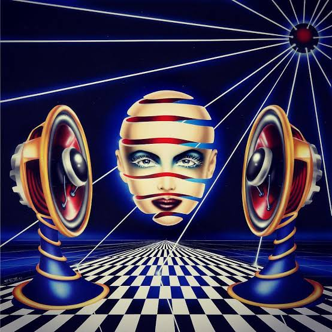

Pez (Peter Thorpe)
One of the early pioneers in original rave art
Pez defined the look of early UK Flyers with hyper-colour characters, playful chaos and iconic rave artwork. His style became the visual language of the early rave explosion. Raindance, Helter Skelter, World of Dance... the list goes on!